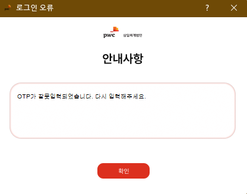

DSD Wizard 메뉴얼
1. 관련 메뉴얼 및 기본 사용법
(1) 스마트리뷰어 및 DSD Wizard 메뉴얼
1) 스마트리뷰어
Robotic PA 통합 설명회 동영상 및 스마트리뷰어 메뉴얼입니다.
만일 접속이 어려우신 경우 핸드폰으로도 접속 가능하십니다.
2) DSD Wizard
DSD Wizard 메뉴얼입니다.
만일 접속이 어려우신 경우 핸드폰으로도 접속 가능하십니다.
(2) DSD Wizard 사용법
1) 주요 안내
1. DSD Wizard는 고객께서 스마트리뷰어로 작성하신 재무제표 및 주석을 DSD로 변환해주는 프로그램입니다.
DSD WIzard용 템플릿 엑셀 파일에서 DSD로의 변환은 단순 변환이므로 해당 템플릿 파일의 오류 값이 존재할 경우 관련 DSD에도 오류 값이 포함되게 됩니다.
변환된 DSD에 대한 최종 점검을 반드시 진행하여 주십시오.
2. DSD Wizard는 외부 인터넷이 접속 가능한 환경에서만 사용이 가능합니다.
만일 외부망과 내부망을 분리된 환경이시라면 외부망에서만 DSD WIzard 사용이 가능함을 양지하여 주시기 바랍니다.
이 경우 스마트리뷰어 작업은 내부망에서 수행한 후 DSD Wizard용 템플릿만을 외부망으로 이동시켜 DSD 생성하셔야 합니다.
3. DSD Wizard는 스마트리뷰어 기능을 활용하여 DSD Wizard용 템플릿을 생성하셔야 이용이 가능합니다.
4. 이용하시는 회사의 보안 환경에 따라 다음 옵션을 주의하여 선택해주십시오.
DRM 우회 - X
DRM 정책이 없는 회사의 환경에 적합하며 대부분의 회사에 해당합니다.
만일 이 옵션으로 진행하였을 때 DSD WIzard 만들기 버튼이 활성화 되지 않는다면 DRM 우회 O 옵션으로 선택 후 다시 시도 부탁 드립니다.
DRM 우회 - O
DRM 정책이 존재하는 회사의 환경에서 사용하는 옵션입니다.
이 경우 반드시 Excel VBA 기능을 사용할 수 있어야 합니다.
2) 사용 방법
1. 아래 DSD Wizard 로그인 절차에 따라 로그인 진행 및 DSD Wizard 실행
2. DRM 우회 옵션 선택 후 파일 가져오기 수행
3. DSD 만들기 버튼 활성화 후 DSD 변환 진행
서식 기본 정보의 경우 기본 값으로 설정되어 있으며, 필요에 따라 변경 하실 수 있습니다.
DSD가 생성된 폴더에 변경된내역.txt가 생성된 경우 반드시 확인 부탁 드립니다.
(3) 이용 전 주의 사항
1) VBA 매크로 설정
대용량 메일에 첨부드린 2. 실행 전 엑셀파일 설정 참조하시어 VBA 매크로 설정 후 재부팅 부탁 드립니다.
(Excel 리본 메뉴 - 파일 - 옵션 - 보안 관리 - 보안 센터 설정 - 아래 그림 확인)
2) DSD Wizard 차단 해제 설정
대용량 메일에 첨부드린 4. 실행 오류 대처법 참조하시어 DSD Wizard- Manager 폴더 내 Manager.exe에 대한 아래 차단 해제 부탁 드립니다.
2. 주요 질의 사항 및 해결 방안
(1) DSD Wizard 다운로드(대용량 메일 - MFT2GO)
1) MFT2GO Onetime Password 인증 불가
MFT2GO 인증 과정에서 인증번호가 담긴 메일이 오지 않는 경우 먼저 스팸메일함을 확인해주시기 바랍니다.
만약 스팸메일함에도 없으실 경우 IT부서에 연락하셔서 아래 3가지 메일의 스팸메일 차단 해제를 요청해주시기 바랍니다.
차단 해제 요청 Email
- mft-east-prod-noreply@pwc.com
- mft2go-west-prod-noreply@pwc.com
- mft2go-noreply@pwc.com
2) MFT2-GO 사이트 로그인 불가
MFR2-GO 다운로드 링크의 경우 각 이메일에 한하여 유일하게 사용할 수 있는 고유 링크입니다.
또한 한번 접속 이후 재차 접속 하시는 경우 접속이 불가능 한 경우가 존재합니다.
따라서 아래 로그인 화면이 보이시는 경우 저희 대표 메일로 대용량 메일 재발송을 요청해주십시오.
- Robotic Application Team - kr_robotic_application@pwc.com
(2) Workbench 로그인(대용량 메일과 별개)
1) Workbench 로그인 비밀번호 분실
Workbench 로그인 창에서 Need Help - 이메일 입력 순으로 비밀번호 초기화를 요청해주세요.
만일 비밀번호 초기화 메일이 도달하지 않으신다면 저희 대표 메일로 비밀번호 초기화를 요청해주십시오.
- Robotic Application Team - kr_robotic_application@pwc.com
3. DSD Wizard 계약 이후 절차
(1) DSD Wizard Workbench 권한 요청
DSD Wizard는 PwC Workbench에 로그인하여 사용자 인증 후 프로그램이 실행됩니다.
따라서 각 회사의 보고서를 총괄하시는 담당자께서는, PwC 삼일회계법인 담당자에게 DSD Wizard 인증 Workbench 등록을 요청을 해야합니다.
하기 관련 메일 상 첨부된 PwC Workbench 등록양식.xlsx 회신 부탁 드립니다.
(해당 시스템은 대용량 메일 시스템(MFT2GO)과는 다른 시스템이며 추가로 가입을 하셔야 합니다.)
- 관련 메일 - [삼일회계법인] 주식회사ABC DSD Wizard 정식버전 배포 건
(2) Workbench Account Activate(회원가입)
1) PwC 삼일회계법인 담당자가 고객사의 이메일을 시스템에 등록하게 되면 아래와 같이 Activate 이메일이 오게 되며, 하단에 Activate your accout를 누르면 로그인 페이지로 이동합니다.
2) Activate 페이지에서 메일주소, 비밀번호, 국가코드(+82), 휴대폰번호를 입력합니다.
3) 문자 혹은 전화로 전달받은 코드를 입력하여 인증을 수행합니다.
4) 가입절차가 완료 되었습니다.
(3) 대용량 파일 다운로드 절차
1) DSD Wizard는 PwC 정책 상 MFT2-GO라는 대용량 메일 서버를 통해 발송 됩니다.
하기 관련 메일 상 Workspace 링크를 클릭하시어 다운로드 부탁 드립니다.
- 관련 메일 - [삼일회계법인] 주식회사 ABC DSD Wizard 대용량 메일 송부드립니다.
4. DSD Wizard 로그인 절차
(1) 실행
(1) DSD Wizard를 더블클릭하여 실행합니다.
(실행시 오류가 발생하는 경우 실행 오류 대처법.docx 파일을 참고해주시기 바랍니다.)
(2) 프로그램 실행 전 동의 팝업에서 개인정보 이용/수집에 동의합니다.
(2) 로그인 (Version 3 이상)
Version 2와 Version 3 로그인 과정이 다를 수 있으며, DSD WIzard 기본 기능에는 차이가 없습니다.
(1) 로그인 메일주소에 상단에서 activate한 이메일을 입력한 후 확인을 누릅니다.
(2) 비밀번호를 입력하고 확인을 누릅니다.
(3) 2차 인증 수단을 선택한 후 확인을 누릅니다.
(4) 전달받은 인증 코드를 입력한 후 확인을 누릅니다.
(5) 2차 인증에 실패한 경우, 아래와 같은 경고창이 출력되며, 확인을 누르면 다시 인증을 시도할 수 있습니다.

(6) 2차 인증에 3회 실패할 경우, 확인을 누르면 웹 로그인으로 전환됩니다.
(이후 절차 (3) 로그인 (Version 2)와 동일)
(3) 로그인 (Version 2)
Version 2와 Version 3 로그인 과정이 다를 수 있으며, DSD WIzard 기본 기능에는 차이가 없습니다.
(1) Workbench 아이디 및 비밀번호를 입력합니다.

(2) 인증 방법을 선택합니다.
(3) 인증 코드를 입력합니다.
(4) DSD Wizard 실행
(1) 로그인 진행 후 프로그램이 실행됩니다.
4. 기타 문의 방법
DSD Wizard 사용 중 문제가 발생하셨다면, DSD Wizard 폴더 내 Log 폴더를 압축하여 저희 대표 메일로 문의 주시기 바랍니다.
- Robotic Application Team - kr_robotic_application@pwc.com